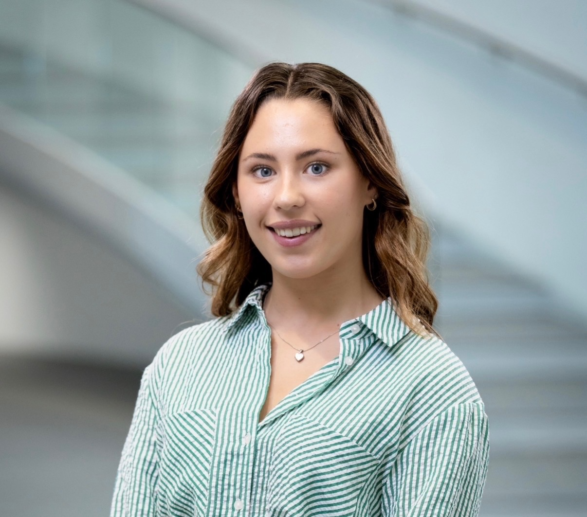
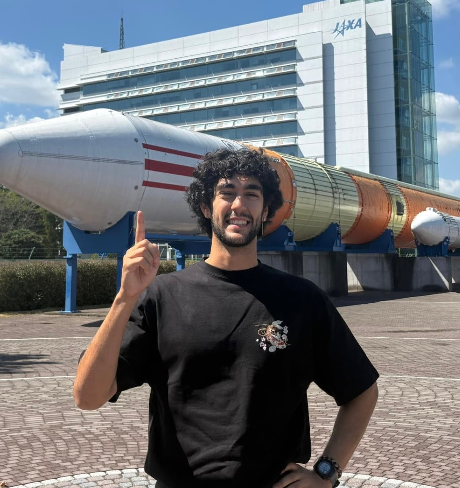
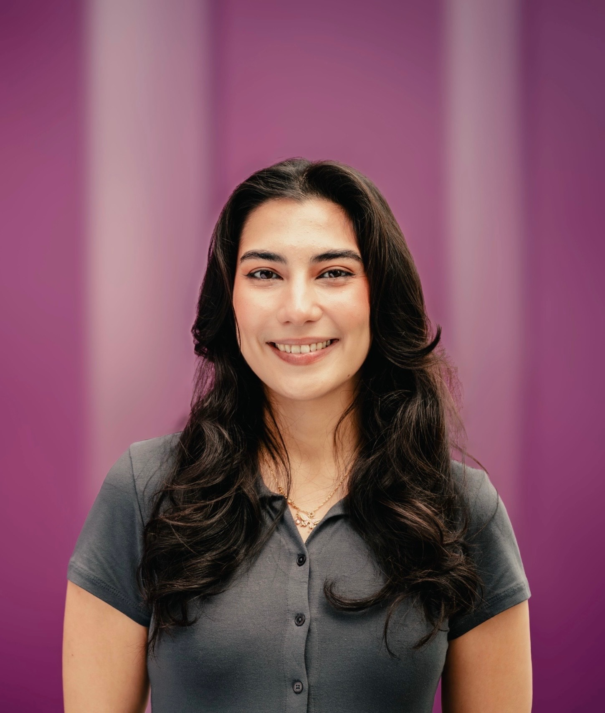
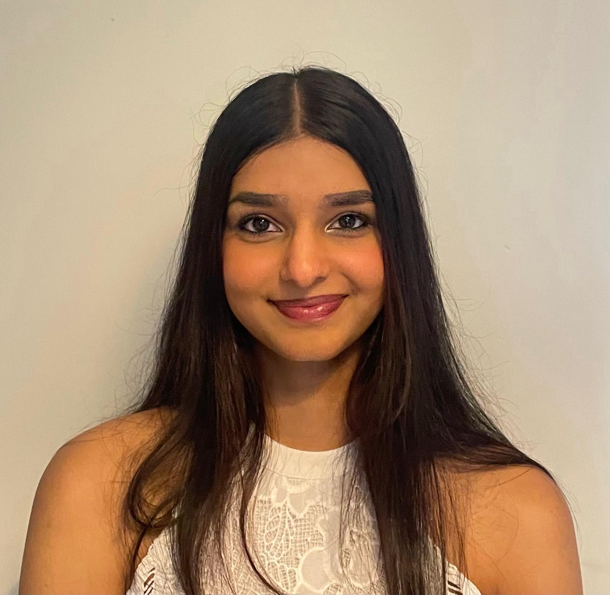
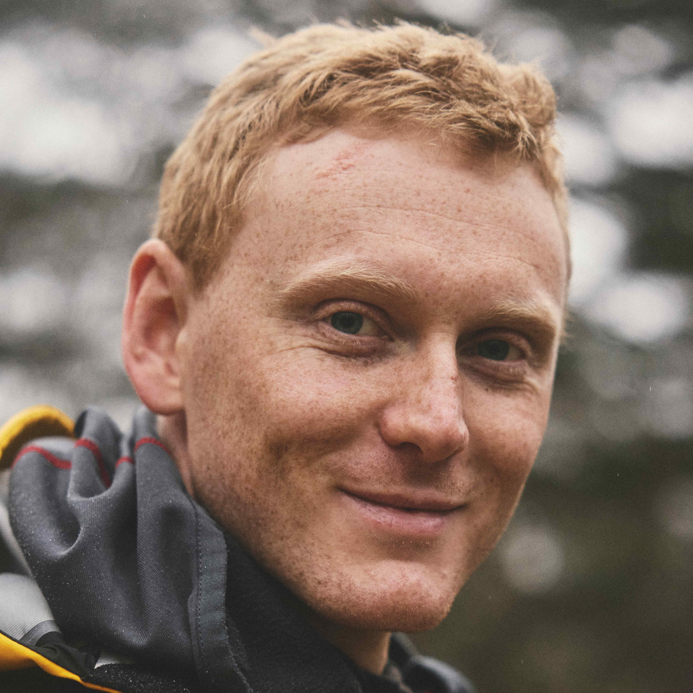
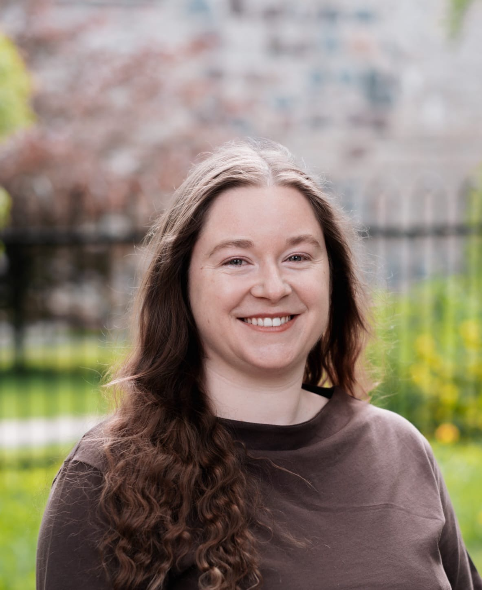

Kurinda has taken an important step towards becoming a long-term initiative. We have established Kurinda – Verein für Forschung, Technologie und Katastrophenvorsorge ("Association for the Promotion of Scientific and Technological Solutions for Disaster Protection"; ZVR Number 1317519404), an Austrian non-profit association dedicated to scientific research, technology development, environmental protection and disaster risk reduction.
The new organisation will provide a formal structure for our international team, allowing Kurinda to apply for research and project funding, manage equipment and resources, collaborate with partner organisations, and support future field deployments. Our work remains voluntary and non-profit, with the goal of developing accessible technologies that help communities monitor environmental change and identify risks earlier.






The Kurinda team is an international and diverse group of individuals who first came together at the 2025 International Space University Space Studies Program in South Korea, brought together by a shared passion for space, technology, and its potential to make a difference on Earth. What began as a collaborative research project has continued beyond the programme, developing new approaches to using Earth observation and space-based technologies to better understand environmental risks and help build more resilient communities.